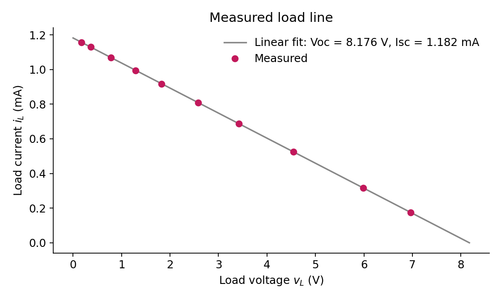
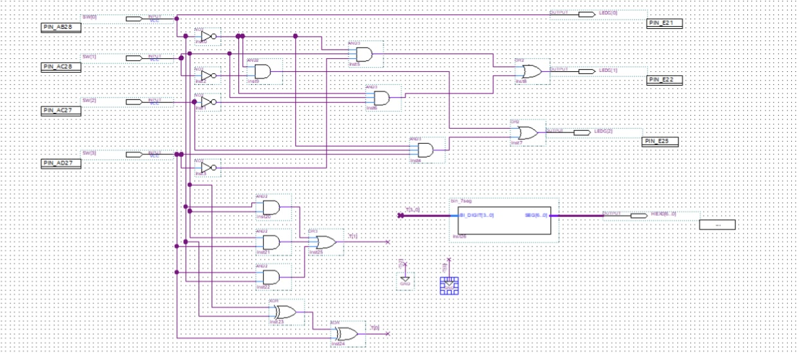
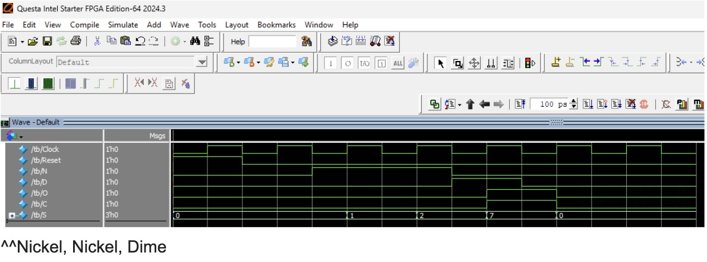
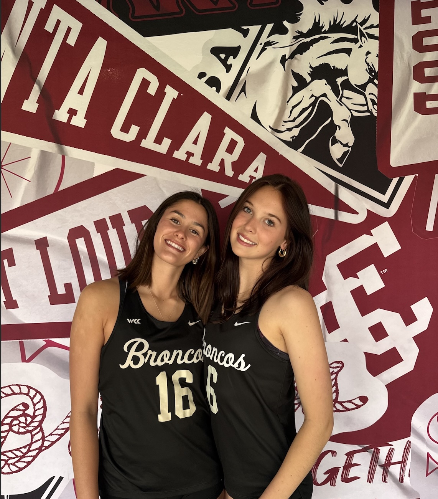

Current Projects
RSL 6U CubeSat Biological Payload Program
Electrical & Computer Engineering Subteam · SCU Bronco Robotics Development Team
Researching the bus communications system (radio and antenna) for a 6U CubeSat that will carry a biological payload into low Earth orbit to study bacterial growth in microgravity for vaccine research. The project is in the research and evaluation phase, and no final radio or antenna has been selected.
- Evaluated OpenLST, an open-source UHF radio based on Planet's design used on over 200 satellites, as a candidate; reviewed its bill of materials and found two discontinued parts (RF amplifier and SAW filter) that block building it as designed, then identified a candidate replacement filter
- Built a single-board prototype cost estimate of about $85–90 in parts, with sourcing links and plain-language notes so non-electrical teammates could follow it
- Clarified the planned operating frequency (about 437 MHz in the 435–438 MHz amateur-satellite band) and flagged a candidate 868/915 MHz LoRa module as outside that band
- Researched deployable UHF antennas and gave the Mechanical team envelope estimates (about 17 cm elements, 98 × 98 mm stowed module, 85–115 g), recommending an off-the-shelf module with a built-in deployer as the lower-complexity option
- Recommended bench testing with a 70 cm-band antenna or dummy load rather than a 2.4 GHz antenna, to avoid damaging the radio's amplifier
- Built a team reference sheet on the comms system and organized open questions for our faculty advisor on ground station access, licensing, and frequency coordination
- Compared battery chemistries and solar panel options for the power subsystem against 6U platform limits and past CubeSat missions
- UHF Radio
- Antennas
- BOM Review
- Component Obsolescence
- Cost Estimation
- Space Systems
Work
Circuit Measurement & Characterization
Bench lab work from ECEN 50L on how test equipment affects a circuit. Extracted the internal resistance of a DMM's voltmeter and ammeter modes, used a Wheatstone bridge for null measurement and light sensing, and validated a Thevenin model with three independent measurement methods that agreed within 0.004 kΩ.
- Keysight DMM
- DC Power Supply
- Wheatstone Bridge
- Breadboarding
- MATLAB

FPGA Traffic Metering Controller
Designed and implemented a three-lane traffic metering controller using Verilog HDL and an Intel DE2-115 FPGA. Developed and simplified combinational logic using truth tables and Karnaugh maps, verified the design through Quartus simulation, and implemented the system on physical FPGA hardware.
- Verilog HDL
- Quartus Prime
- Intel DE2-115 FPGA
- Digital Logic
- Karnaugh Maps

Vending Machine FSM Controller
Designed and verified a Moore finite state machine controller for a coin-operated vending system in Verilog, implementing the same design using two independent approaches: minimized Boolean equations and behavioral case-statement logic. Confirmed both implementations produced identical results across all test scenarios through RTL simulation.
- Verilog HDL
- Finite State Machines
- Boolean Logic
- RTL Simulation
- Digital Logic

Organizations
SCU Bronco Robotics Development Team
Electrical & Computer Engineering Subteam
Researching the radio and antenna system for the team's 6U CubeSat biological payload mission.
EM Lab Research Group
Undergraduate Researcher
Lab Group focused on electromagnetic research, including antenna design, RF propagation, and wireless communication systems. Group is led by Professor Schab.
IEEE
Student Member · SCU Student Branch
Attending technical workshops, industry talks, and networking events across electrical and computer engineering.
Women in Electrical Engineering (WiEE)
Member
Part of a community supporting women in electrical engineering through mentorship, professional development, and technical events.
Certifications
- LiPo Battery Training · Robotic Systems Lab Completed
- FCC Amateur Radio Technician License Studying
- SCU MakerLab Certification In Progress
- Robotic Systems Lab Safety Certification In Progress
- Dry Lab Safety Certification In Progress
About Me
I'm an Electrical & Computer Engineering student at Santa Clara University with a minor in Computer Science & Engineering, and a former Division I Beach Volleyball athlete at SCU. I'm drawn to aerospace and defense systems, where hardware has to work reliably in demanding environments. My work spans digital logic, embedded systems, and power and communications design, and I'm currently applying it to spacecraft through SCU's 6U CubeSat program.
Outside of engineering, I'm usually planning my next trip, hiking a mountain, or picking up a new hobby. I love music, reading, and finding new gluten free recipes to try.
My Resume My GitHub My LinkedIn